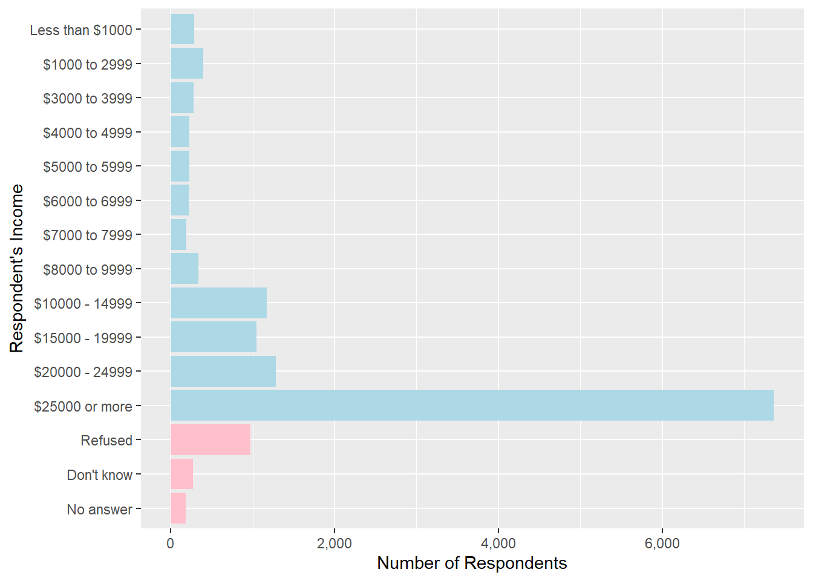
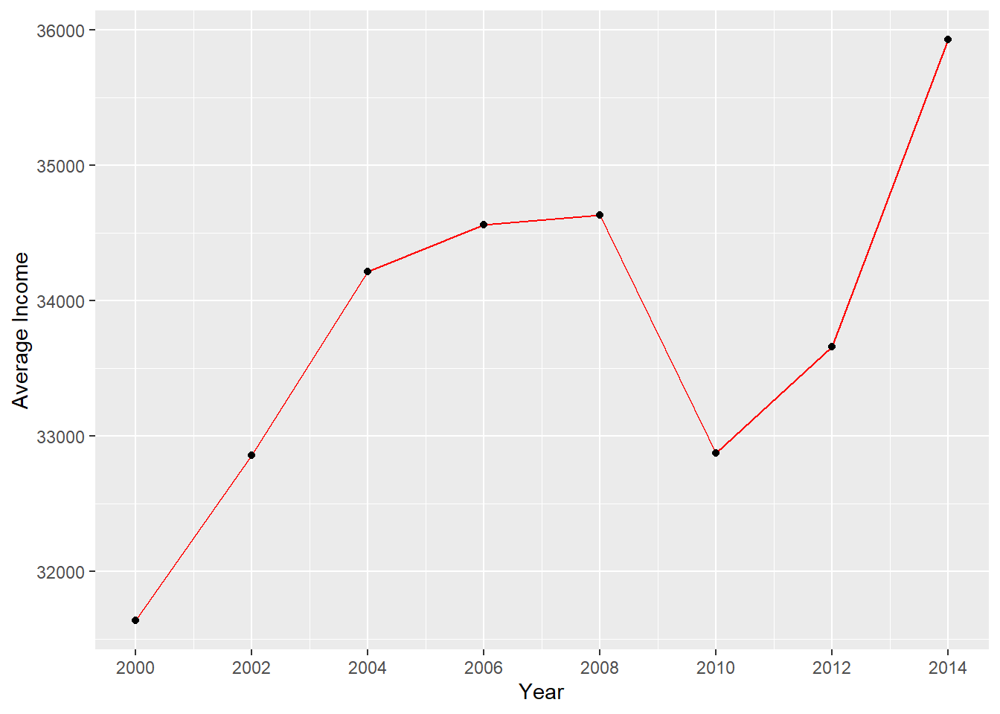
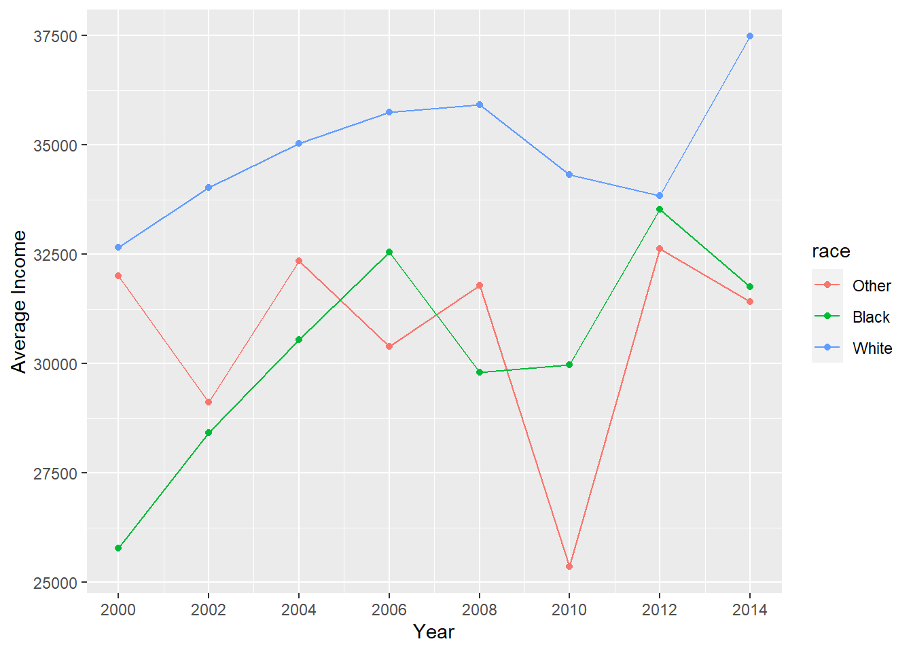
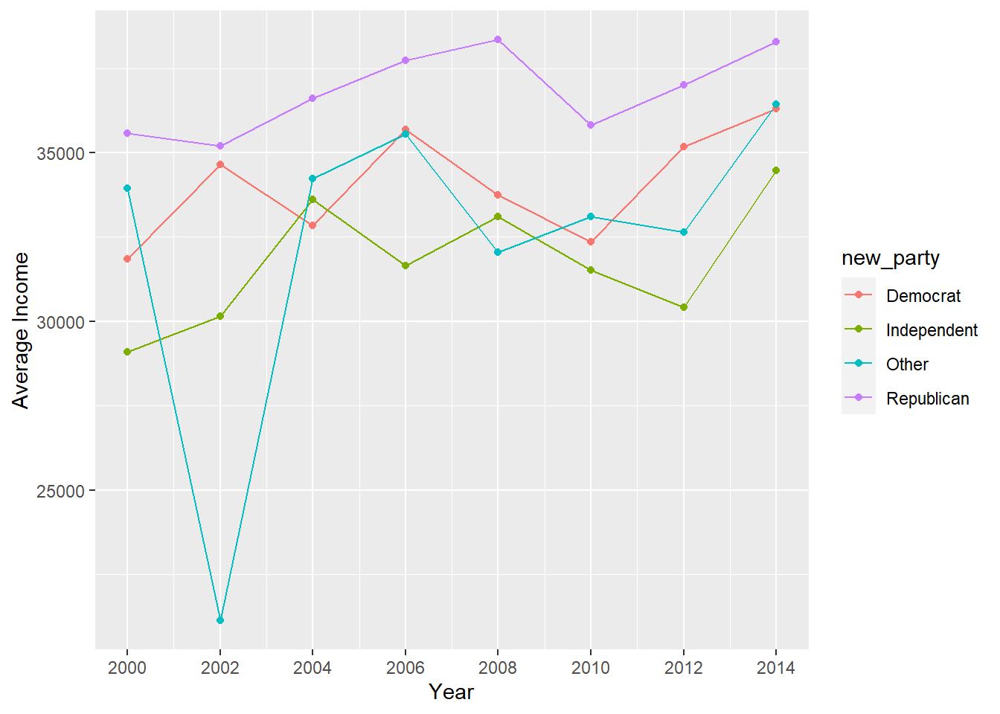
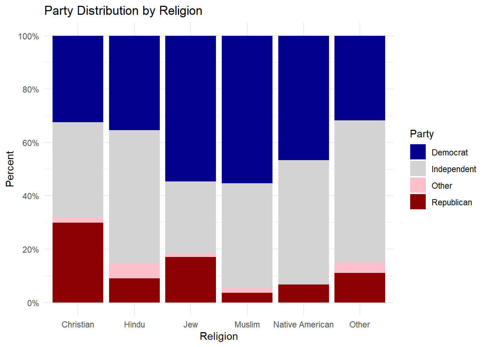
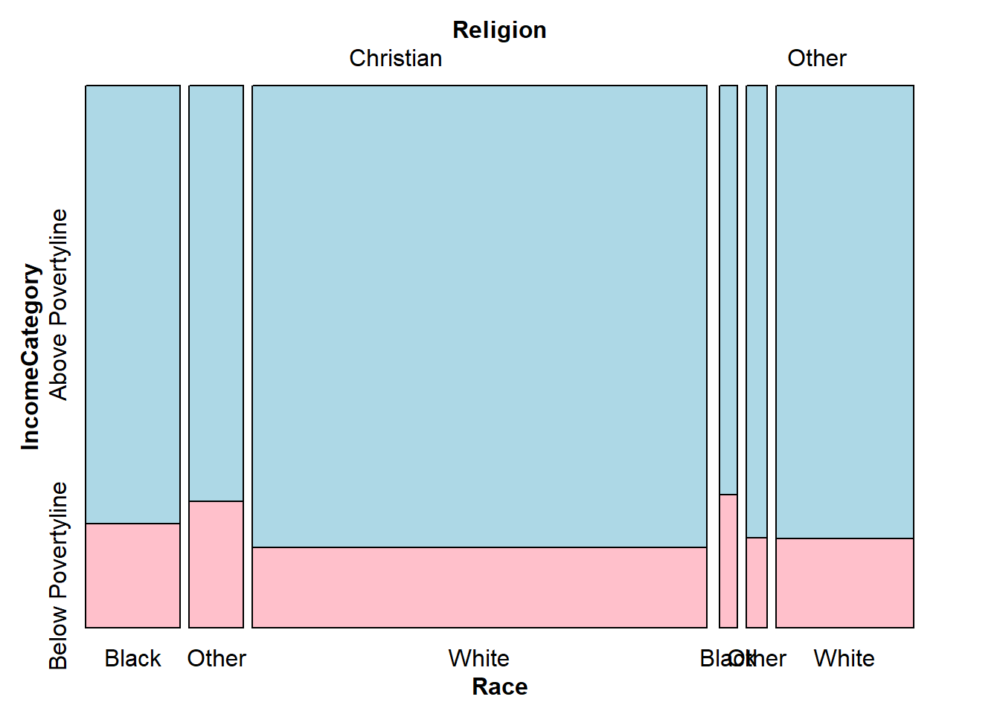
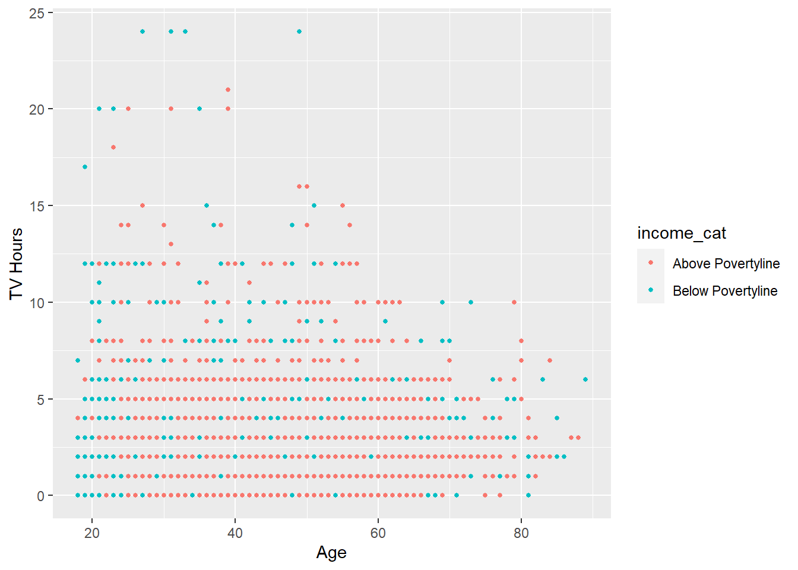
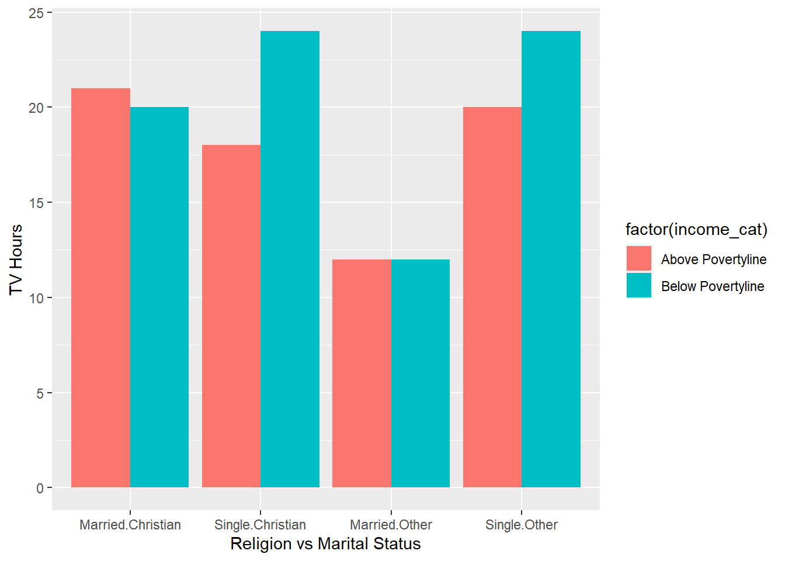
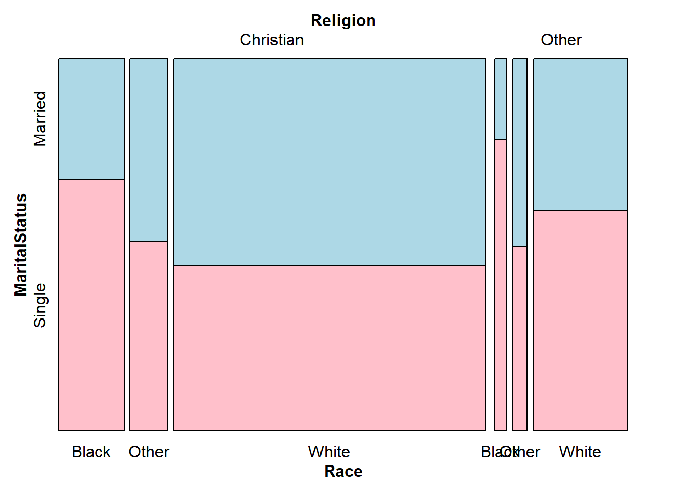

Chapter 5 Results
5.1 Income
First, let us observe the number of respondents in each bucket of income.
library(dplyr)
library(ggplot2)
library(tidyverse)
gss_cat %>%
filter(!rincome %in% c("Not applicable")) %>%
mutate(rincome = fct_recode(rincome,
"Less than $1000" = "Lt $1000"
)) %>%
mutate(rincome_na = rincome %in% c("Refused", "Don't know", "No answer")) %>%
ggplot(aes(x = rincome, fill = rincome_na)) +
geom_bar() +
coord_flip() +
scale_y_continuous("Number of Respondents", labels = scales::comma) +
scale_x_discrete("Respondent's Income") +
scale_fill_manual(values = c("FALSE" = "light blue", "TRUE" = "pink")) +
theme(legend.position = "None") Here, we can see that the number of respondents are the highest in $25,000 or more bucket. The percentage of respondents with 10,000 or more income is higher than the other cateogories. There are significant number of respondents whose income is not known as seen in the distribution.
Now, let us check the trend in the average annual income from 2000 to 2014. For this graph, we have considered the average of bucket size to get a numeric value of income. For the $25,000 or above bucket, we assumed a value of $50,000. Also, the values whose income is unknown have been removed for this analysis.
library(dplyr)
gss_df <- as.data.frame(gss_cat)
gss_df <- filter(gss_df, rincome != "Not applicable" & rincome != "Refused" & rincome != "Don't know" & rincome != "No answer")
gss_df$new_income[gss_df$rincome=="Lt $1000"]<-500
gss_df$new_income[gss_df$rincome=="$1000 to 2999"]<-2000
gss_df$new_income[gss_df$rincome=="$3000 to 3999"]<-3500
gss_df$new_income[gss_df$rincome=="$4000 to 4999"]<-4500
gss_df$new_income[gss_df$rincome=="$5000 to 5999"]<-5500
gss_df$new_income[gss_df$rincome=="$6000 to 6999"]<-6500
gss_df$new_income[gss_df$rincome=="$7000 to 7999"]<-7500
gss_df$new_income[gss_df$rincome=="$8000 to 9999"]<-9000
gss_df$new_income[gss_df$rincome=="$10000 - 14999"]<-12500
gss_df$new_income[gss_df$rincome=="$15000 - 19999"]<-17500
gss_df$new_income[gss_df$rincome=="$20000 - 24999"]<-22500
gss_df$new_income[gss_df$rincome=="$25000 or more"]<-50000library(plyr)
avg_income_df <- ddply(gss_df, .(year), summarize, avg_income=mean(new_income))
ggplot(data=avg_income_df, aes(x=year, y=avg_income, group=1)) +
geom_line(color="red")+
geom_point()+
scale_x_continuous("Year", breaks= seq(2000, 2015, by=2))+
scale_y_continuous("Average Income")
The average US income in 2014 is approximately $55,000 as per census. However, since we made few assumptions, the average in 2014 came out to be $36,000 which can be still good for the analyzing the trend. Here, we can observe that the average income increased from 2000 to 2008 and there is a sudden dip in 2010. We suspect that this could be due to the 2008 Financial crisis post which we can observe a rapid growth again. Now, let us observe the trend in average income differentiating it by race. Here, we want to check if there is income inequality based on race historically and how did it change over time.
avg_income_race_df <- ddply(gss_df, .(year, race), summarize, avg_income=mean(new_income))
ggplot(data=avg_income_race_df, aes(x=year, y=avg_income, group=race,color=race)) +
geom_line()+
geom_point()+
scale_x_continuous("Year", breaks= seq(2000, 2015, by=2))+
scale_y_continuous("Average Income") Here, we can see that the income inequality between White and Black is approximately same in 2014 when compared to 2000. This could be due to the fact that there is a sudden decrease in average income of Black and other races from 2012 to 2014 where the income increased for White race. This could also be due to inconsistency in the data. However, we cannot conclude just based on the available data. An interesting observation to notice is that, the average income of other races has dropped the highest in 2010 and is very dynamic compared to other races. Now let us check the average income of respondents who support a particular political party.
gss_df$new_party[gss_df$partyid=="No answer"]<-"Other"
gss_df$new_party[gss_df$partyid=="Don't know"]<-"Other"
gss_df$new_party[gss_df$partyid=="Other party"]<-"Other"
gss_df$new_party[gss_df$partyid=="Strong republican"]<-"Republican"
gss_df$new_party[gss_df$partyid=="Not str republican"]<-"Republican"
gss_df$new_party[gss_df$partyid=="Strong democrat"]<-"Democrat"
gss_df$new_party[gss_df$partyid=="Not str democrat"]<-"Democrat"
gss_df$new_party[gss_df$partyid=="Ind,near rep"]<-"Independent"
gss_df$new_party[gss_df$partyid=="Independent"]<-"Independent"
gss_df$new_party[gss_df$partyid=="Ind,near dem"]<-"Independent"
avg_income_party_df <- ddply(gss_df, .(year, new_party), summarize, avg_income=mean(new_income))
ggplot(data=avg_income_party_df, aes(x=year, y=avg_income, group=new_party,color=new_party)) +
geom_line()+
geom_point()+
scale_x_continuous("Year", breaks= seq(2000, 2015, by=2))+
scale_y_continuous("Average Income")
Here, we can observe that the average income of respondents supporting Republican party have higher average income than the respondents supporting Democrats. However, the difference is not significant suggesting the fact the political party affiliation and income are not dependent on each other. On a similar note, let us check if religion has an impact on person`s political party affiliation. For that, we have combined multiple religion categories into smaller groups for better visualization.
gss_df$new_relig[gss_df$relig=="Protestant"]<-"Christian"
gss_df$new_relig[gss_df$relig=="Christian"]<-"Christian"
gss_df$new_relig[gss_df$relig=="Catholic"]<-"Christian"
gss_df$new_relig[gss_df$relig=="Orthodox-christian"]<-"Christian"
gss_df$new_relig[gss_df$relig=="Hinduism"]<-"Hindu"
gss_df$new_relig[gss_df$relig=="Buddhism"]<-"Hindu"
gss_df$new_relig[gss_df$relig=="Moslem/islam"]<-"Muslim"
gss_df$new_relig[gss_df$relig=="Jewish"]<-"Jew"
gss_df$new_relig[gss_df$relig=="Native american"]<-"Native American"
gss_df$new_relig[gss_df$relig=="None"]<-"Other"
gss_df$new_relig[gss_df$relig=="No answer"]<-"Other"
gss_df$new_relig[gss_df$relig=="Don't know"]<-"Other"
gss_df$new_relig[gss_df$relig=="Other"]<-"Other"
gss_df$new_relig[gss_df$relig=="Other eastern"]<-"Other"
gss_df$new_relig[gss_df$relig=="Inter-nondenominational"]<-"Other"5.2 Religion vs Party-ID
library(scales)
ggplot(gss_df,
aes(x = new_relig,
fill = new_party)) +
geom_bar(position = "fill") +
scale_y_continuous(breaks = seq(0, 1, .2),
label = percent) +
scale_fill_manual(values = c("Dark blue","light grey","Pink","Dark red")) +
labs(y = "Percent",
fill = "Party",
x = "Religion",
title = "Party Distribution by Religion") +
theme_minimal()
Here, we can observe that the percentage of Republican party supporters are highest in Christianity whereas the percetage of Democrat party supporters are highest in the respondents who are Jews and Muslims. Also, the percentage of independent candidate supporters are significant in each category who can either incline towards Democrats or Republicans which suggests that the party which is able to convert most of independent votes has the advatage of winning the elections.
Now let us go aback to income and check it based on religion and race at the same time. For this visualization, we have assumed income less than $10,000 to be Below Poverty and income greater than $10,000 as Above Poverty. Also, the religions have been condensed to Christianity vs Others for a simpler visualization.
gss_df$income_cat[gss_df$rincome=="Lt $1000"]<-"Below Povertyline"
gss_df$income_cat[gss_df$rincome=="$1000 to 2999"]<-"Below Povertyline"
gss_df$income_cat[gss_df$rincome=="$3000 to 3999"]<-"Below Povertyline"
gss_df$income_cat[gss_df$rincome=="$4000 to 4999"]<-"Below Povertyline"
gss_df$income_cat[gss_df$rincome=="$5000 to 5999"]<-"Below Povertyline"
gss_df$income_cat[gss_df$rincome=="$6000 to 6999"]<-"Below Povertyline"
gss_df$income_cat[gss_df$rincome=="$7000 to 7999"]<-"Below Povertyline"
gss_df$income_cat[gss_df$rincome=="$8000 to 9999"]<-"Below Povertyline"
gss_df$income_cat[gss_df$rincome=="$10000 - 14999"]<-"Above Povertyline"
gss_df$income_cat[gss_df$rincome=="$15000 - 19999"]<-"Above Povertyline"
gss_df$income_cat[gss_df$rincome=="$20000 - 24999"]<-"Above Povertyline"
gss_df$income_cat[gss_df$rincome=="$25000 or more"]<-"Above Povertyline"gss_df$new_relig_1[gss_df$relig=="Protestant"]<-"Christian"
gss_df$new_relig_1[gss_df$relig=="Christian"]<-"Christian"
gss_df$new_relig_1[gss_df$relig=="Catholic"]<-"Christian"
gss_df$new_relig_1[gss_df$relig=="Orthodox-christian"]<-"Christian"
gss_df$new_relig_1[gss_df$relig=="Hinduism"]<-"Other"
gss_df$new_relig_1[gss_df$relig=="Buddhism"]<-"Other"
gss_df$new_relig_1[gss_df$relig=="Moslem/islam"]<-"Other"
gss_df$new_relig_1[gss_df$relig=="Jewish"]<-"Other"
gss_df$new_relig_1[gss_df$relig=="Native american"]<-"Other"
gss_df$new_relig_1[gss_df$relig=="None"]<-"Other"
gss_df$new_relig_1[gss_df$relig=="No answer"]<-"Other"
gss_df$new_relig_1[gss_df$relig=="Don't know"]<-"Other"
gss_df$new_relig_1[gss_df$relig=="Other"]<-"Other"
gss_df$new_relig_1[gss_df$relig=="Other eastern"]<-"Other"
gss_df$new_relig_1[gss_df$relig=="Inter-nondenominational"]<-"Other"gss_df$new_race[gss_df$race=="White"]<-"White"
gss_df$new_race[gss_df$race=="Black"]<-"Black"
gss_df$new_race[gss_df$race=="Other"]<-"Other"
gss_df$new_race[gss_df$race=="Not applicable"]<-"Other"library(vcd)
# Split by Admit, then Gender, then Dept
new_gss_df <- gss_df[c("new_relig_1", "income_cat","new_race")]
colnames(new_gss_df) <- c("Religion", "IncomeCategory", "Race")
mosaic(~ Religion + IncomeCategory + Race, data = new_gss_df, highlighting = "IncomeCategory",highlighting_fill = c("lightblue", "pink"), direction = c("v", "h", "v"))
Here, the first observation is that the percentage of respondents who are Christian is significantly high which can be observed from the width of the plot. We can see that the percentage of respondents who are below poverty line is not significantly different between Christian and other religion. However, the percentage of respondents who are above poverty line are higher in White race in both religions. Christian Black race has lower Below Poverty percentage than Other Black race.
5.3 TV Hours
Now, let us check some other dimensions of the given data. We would like check the dependencies between the variables Income, Age and Number of TV hours. In specific we would like to answer the following questions: 1. Is there a particular age group that has high income? 2. Do old people tend to watch more TV? 3. Does watching more TV indicate a lower income? Let us answer these questions by observing the following scatter plot.
ggplot(gss_df, aes(x=age, y=tvhours, color = income_cat)) +
geom_point(size=1)+scale_x_continuous("Age")+scale_y_continuous("TV Hours")
- Here, in each axis we can see that the blue dots are concentrated on either ends of each horizontal line which indicates that the income of older people and younger people is less compared to the middle age earning professionals.
- Here, we can see that the points with higher TV Hours values are concentrated on the upper left of the graph which indicates that the younger people watch more TV than old people which is counter intuitive to our assumption.
- In any given vertical line, the number of blue dots are increasing as we go up. This indicates that watching more TV corresponds to lower income. Or the other way to think about this could be, lower income respondents have more leisure time to watch TV.
Now, let us compare the dependencies between Marital Status,Religion, TV Hours and Income. We would like to answer the following questions: 1. Do single people watch more TV than married people? 2. Do respondents belonging to a particular religion watch more TV?
gss_df$new_marital[gss_df$marital=="Never married"]<-"Single"
gss_df$new_marital[gss_df$marital=="Divorced"]<-"Single"
gss_df$new_marital[gss_df$marital=="Widowed"]<-"Single"
gss_df$new_marital[gss_df$marital=="Separated"]<-"Single"
gss_df$new_marital[gss_df$marital=="No answer"]<-"No answer"
gss_df$new_marital[gss_df$marital=="Married"]<-"Married"
marital_df <- filter(gss_df, new_marital != "No answer")
dodge <- position_dodge(width = 0.9)
ggplot(marital_df, aes(x = interaction(new_marital, new_relig_1), y = tvhours, fill = factor(income_cat))) +
geom_bar(stat = "identity", position = position_dodge())+scale_x_discrete("Religion vs Marital Status")+scale_y_continuous("TV Hours")
- Here, we can observe that the single people tend to watch more TV than Married people. The difference is not very significant in Christianity which is majority of our data. Hence, we cannot conclusively say that single people watch more TV than married people. However, the Below Poverty line respondents tend to watch more TV as observed from the previous plot as well.
- From the above graph, there is no impact of religion is not very relevant in Single people. However, married people of Other religions tend to watch more TV compared to married people in Christianity. This leads to an interesting question that does religion and race have relation with relationship status of people?
5.4 Race, Religion & Marital status
new_marital_df <- gss_df[c("new_relig_1", "new_marital","new_race","income_cat")]
colnames(new_marital_df) <- c("Religion","MaritalStatus","Race","IncomeCategory")
new_marital_df <- filter(new_marital_df, MaritalStatus != "No answer")
mosaic(~ Religion + MaritalStatus + Race, data = new_marital_df, highlighting = "MaritalStatus",highlighting_fill = c("lightblue", "pink"), direction = c("v", "h", "v"))
Here, we can observe that the percentage of Single respondents is lesser in Christianity than other religions. Also, the percentage of Single people is lower in White race compared to other races. Respondents belonging to Christianity and White race are less probable to be Single than respondents belonging to White race and other religion. Though the plot provides a visual proof, we cannot decisively comment on these aspects as they are sensitive and require more study to get conclusive results.